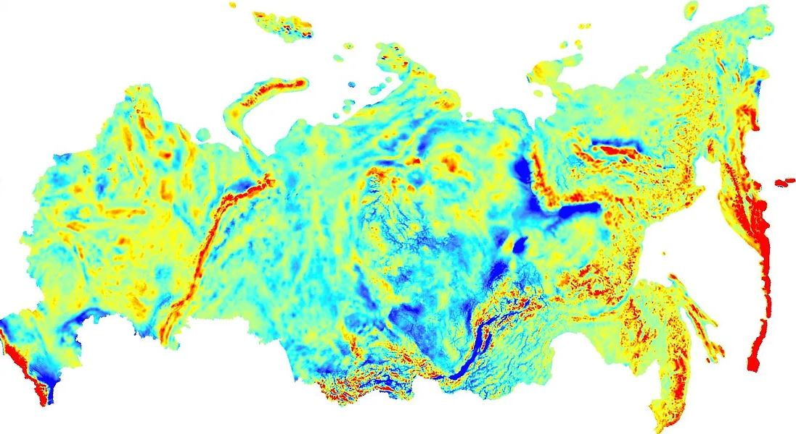
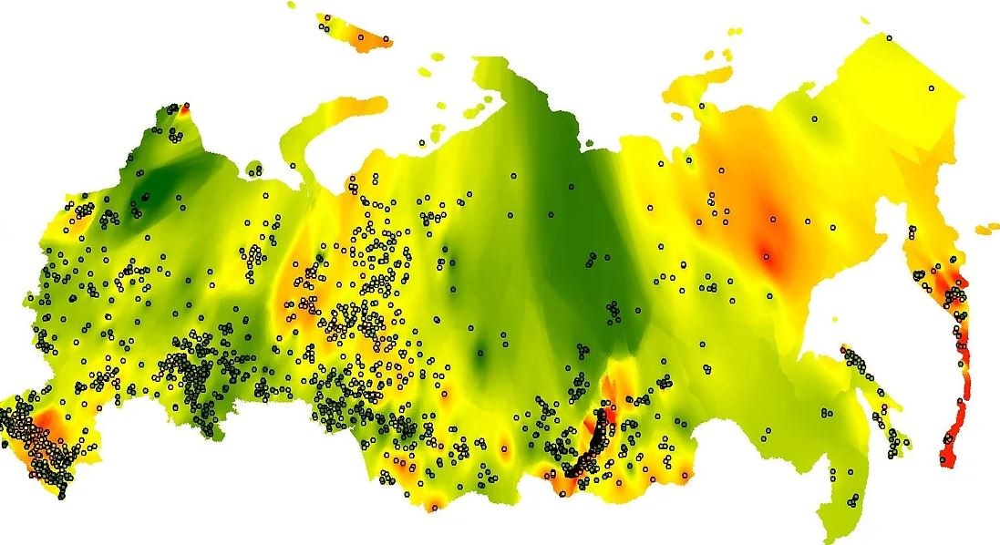
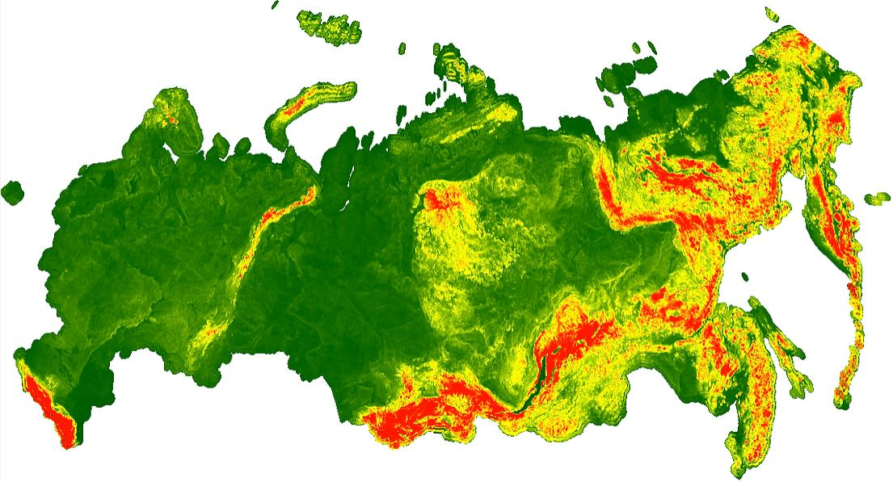
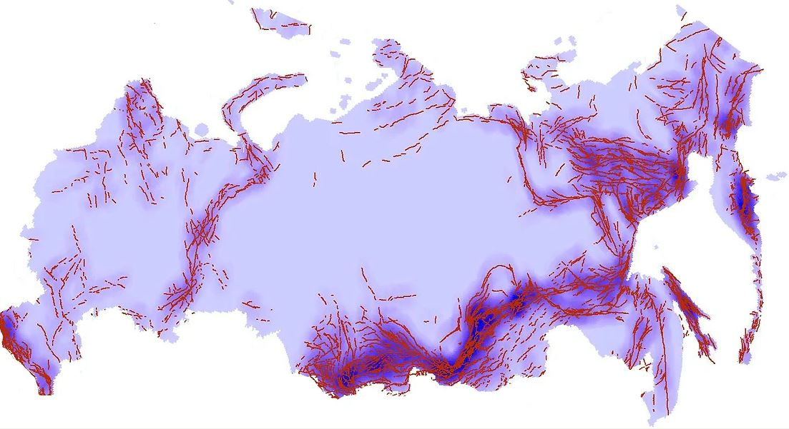
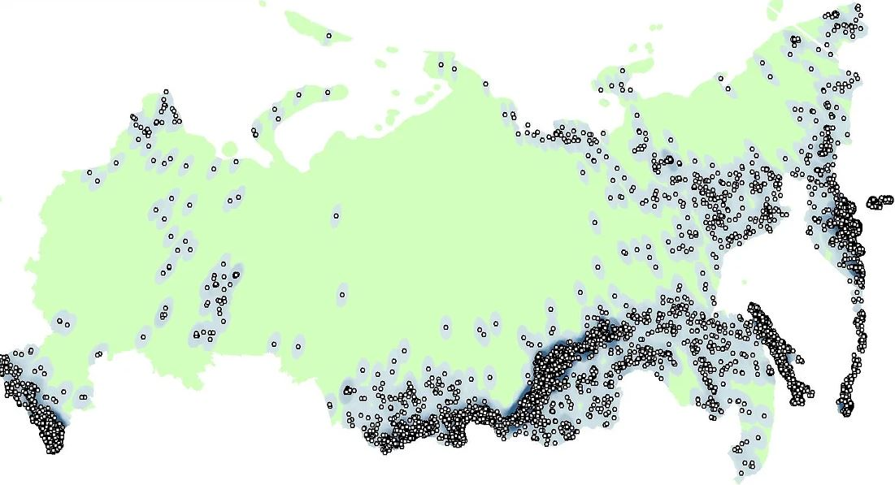
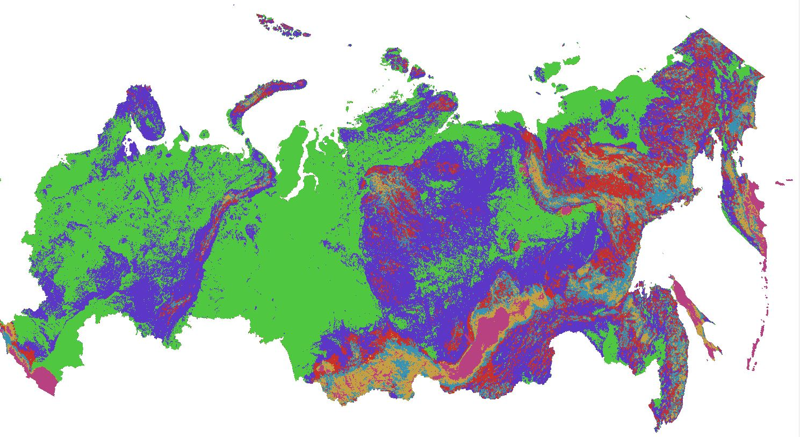
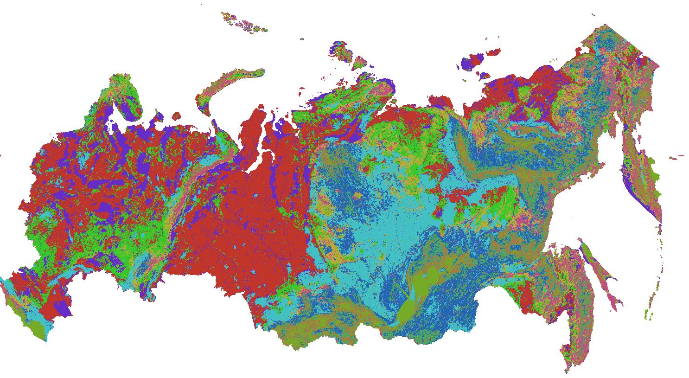

Map of background seismicity
The aim of the project was to develop a map of background seismicity domains that will be used as input data in General Seismic Regionalizing (GSR) map development.
Colleagues decided that background seismicity depends on a few parameters:
1) The map of Earth’s gravity anomaly created by kriging interpolation of Free-air gravity anomaly ascii data.
2) The map of heat flow also interpolated by inverse distance weighted (IDW) method from points of Global Heat Flow Database. Unfortunately, there are not so many points in Russia (especially in Siberia), that does not allow to use kriging or other more accurate methods.
3) The map of topography range. I used GTOPO30 of USGS for a basemap and applied Focal statistics tool with circle neighbourhood and "range" as a statistics type to obtain Earth's surface amplitude in each circle
4) The map of active faults density created on Active faults of Eurasia database by Line density tool
5) The map of seismic events density with magnitude from 3 to 5.5, created by Point density tool. Events with higher magnitude should be considered in other processing.
After obtaining and analysing maps, I used Iso Cluster Unsupervised Classification script, varying:
As a result, we received a map of 6 classes:
And of 10 classes:
As we can see, plain territories such as Russian Plain and West Siberian Plain, are represented mostly by two classes differed due to gravity anomaly, while mountain areas such as Urals, Altai, Sayan, Caucasus, Cherskiy Range and all of the Far East close to Pasific Belt are more speckled due to consisting of more classes. In this case, more classes are not always better.